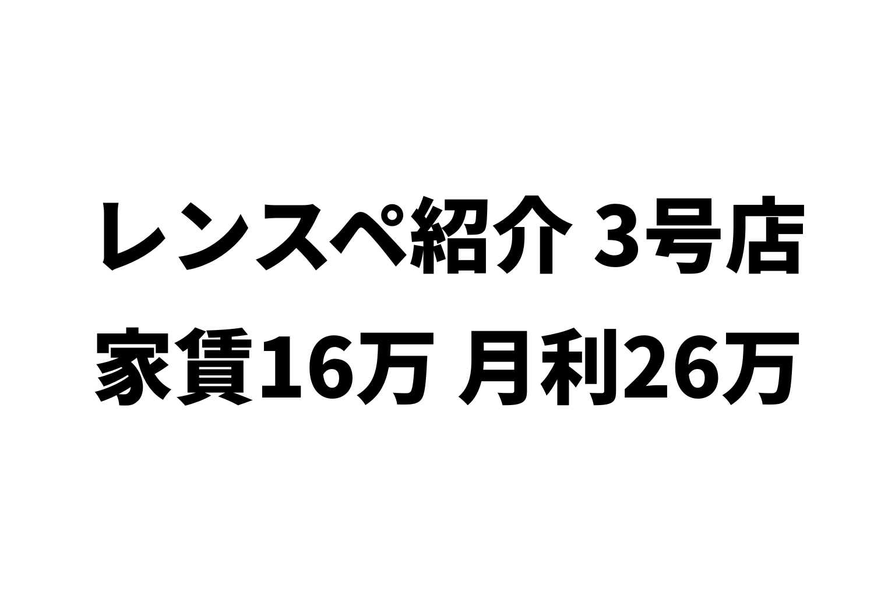
いちばん稼いでいた店を、1年5ヶ月で閉めました。
ぼくがやっているダンススタジオの「3号店」です。
初期費用は9ヶ月で回収。
閉める前の1年(2022年4月〜2023年3月)は、月の利益が平均25.7万円。
ダンススタジオ11店舗の中で、いちばん稼いでいた店です。
撤退の理由は、下の階からの騒音のクレームでした。
撤退の話は別の記事に書きました。
今回は、開業から閉店までの数字を、ぜんぶ出します。
どんな店か
- オープン: 2021年11月
- 閉店: 2023年3月(営業は1年5ヶ月)
- 場所: 大きなターミナル駅の近く。駅から徒歩5分
- 広さ: 約50㎡
- 階: ビルの5階
9号店は、住宅街のふつうの駅でした。
3号店は、その逆です。
人がたくさん行き来する、大きな駅の近くです。
家賃と、契約でかかったお金
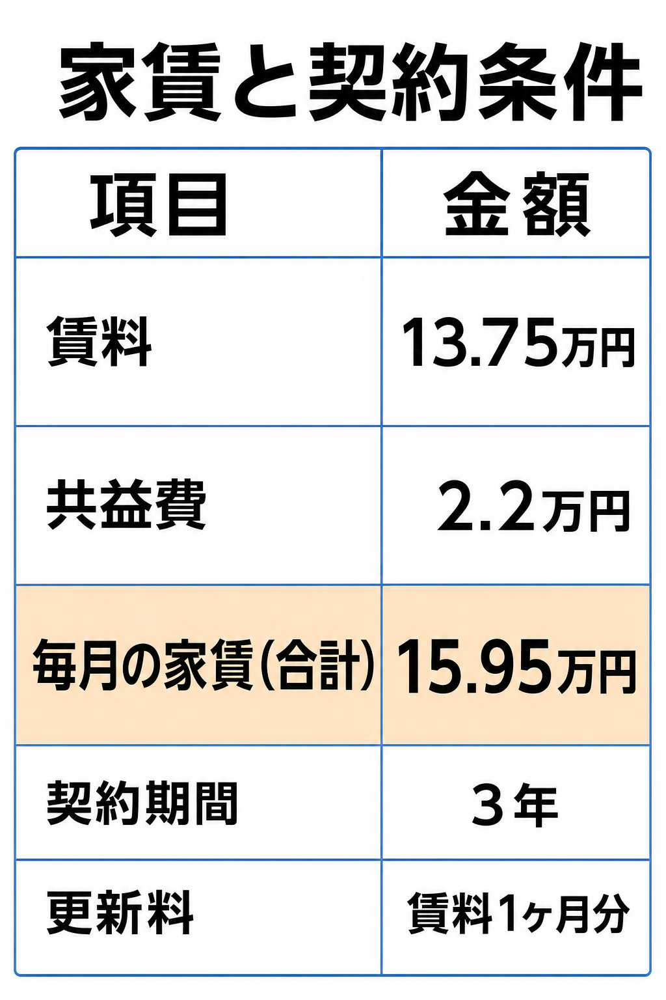
ダンススタジオ11店舗の家賃の平均は、11.2万円です。
3号店は、平均より5万円ほど高い家賃でした。
契約のときに払ったお金です。
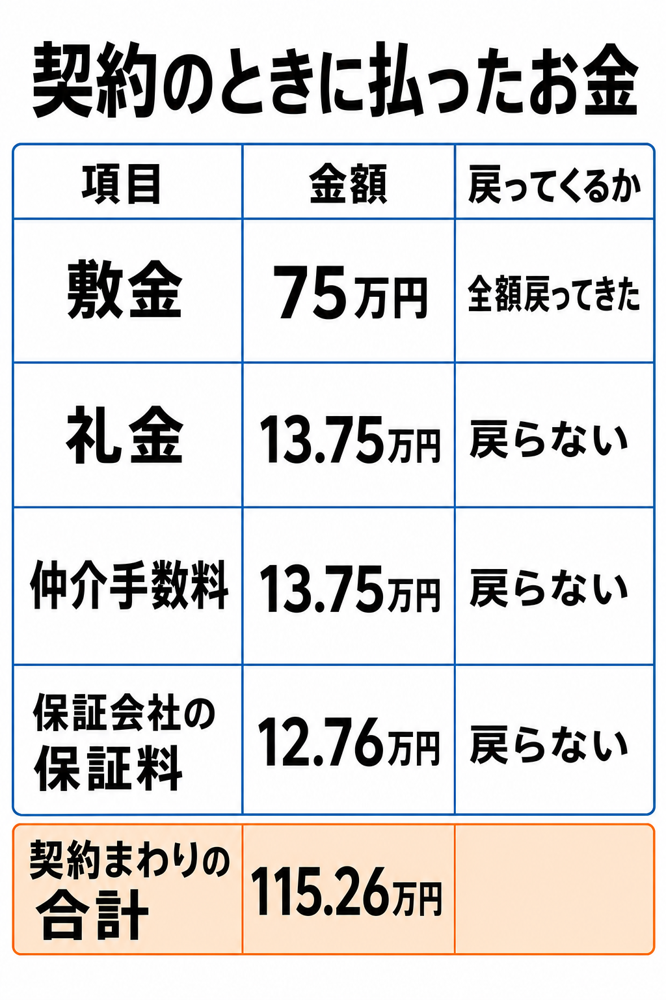
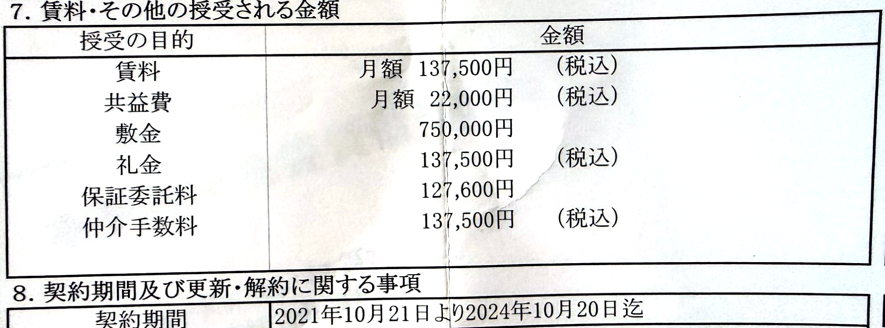
実際の重要事項説明書の一部
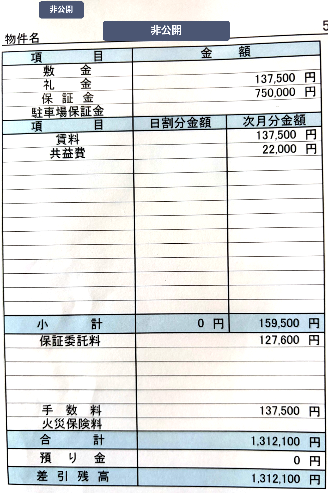
入居時の精算書(物件名などは隠しています。金額の印字が1行ずれています)
敷金が賃料の5ヶ月分以上と、かなり重めでした。
でも、撤退したときに全額戻ってきました。
初期費用は155.5万円。実質は80.5万円
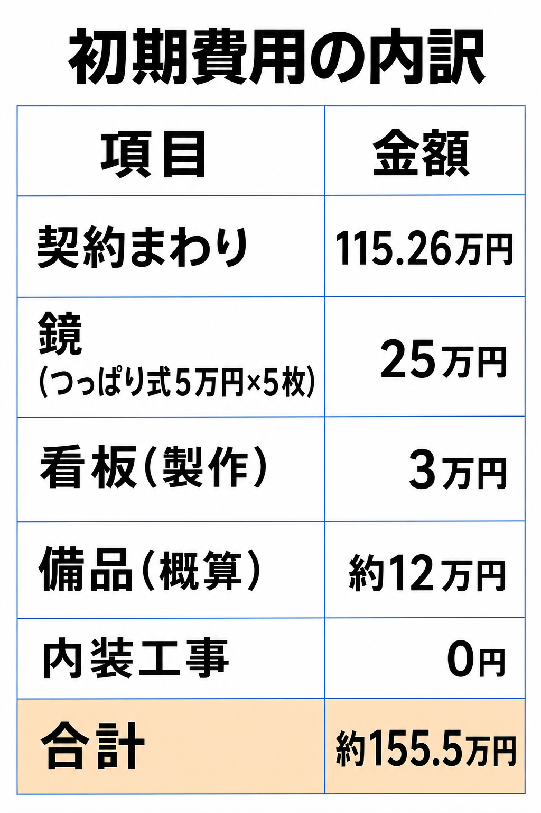
鏡は、壁に貼らない「つっぱり式」です。
床と天井のあいだで固定するので、工事がいりません。
1枚5万円を5枚で、25万円でした。
業者さんに壁一面の鏡を付けてもらうと、ぼくの別の店では幅6.5mで53万円かかりました。
つっぱり式なら、その半分以下です。
撤退のときも、外して持ち出せます。
ただ、つっぱり式の鏡はおすすめしません。
使っているうちに、鏡がずれてくるんです。
そのたびに直すのが、本当にめんどうでした。
備品は、こんなものをそろえました。
- 音響(CDプレーヤー・スピーカー): 約3万円
- 洋式便座(スワレット)の購入と取り付け: 約4万円
- 下駄箱: 約1万円
- ヨガマット: 約1.2万円
- スリッパ・掃除機・時計・電源タップなど: 約3万円
155.5万円のうち、敷金の75万円は戻ってきました。
戻ってこなかったお金は、実質80.5万円です。
集客は、公式サイトと法人の定期利用
営業していた1年5ヶ月の売上を、入ってきた道すじで分けるとこうなります。
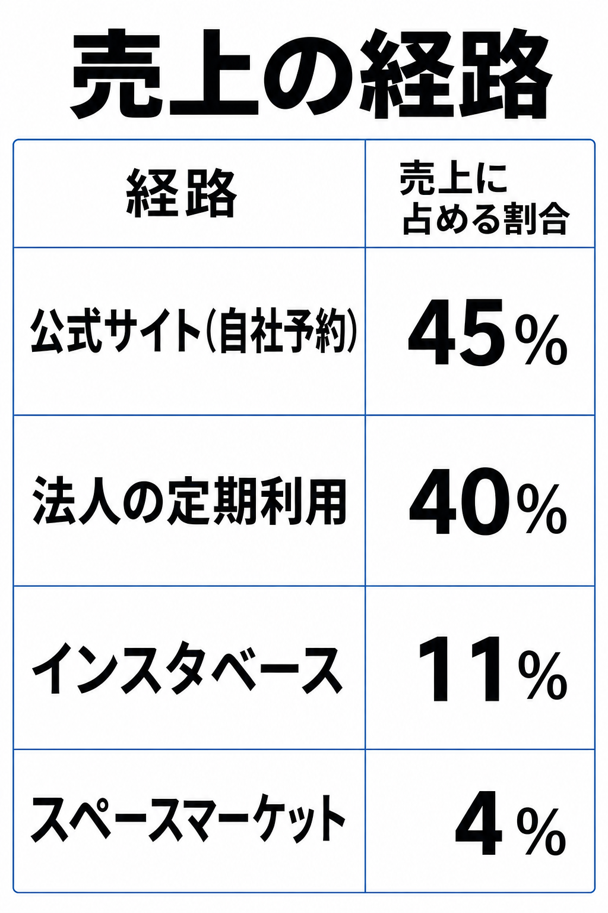
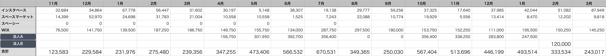
月別・経路別の売上表(2021年11月〜2023年3月)。WIXが公式サイト、法人A・Bが法人の定期利用です
売上の85%が、ポータルサイトを通っていません。
大きかったのは、法人の定期利用です。
平日の日中を、まとまった時間で借りてくれました。
多い月は、この1社だけで月30万円を超えました。
数字をぜんぶ出します
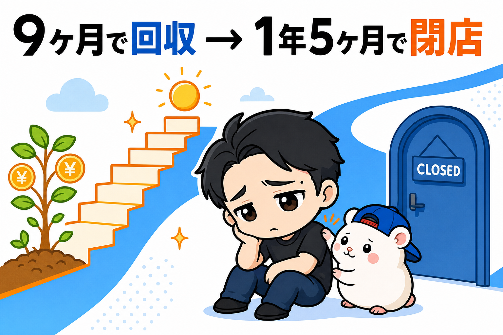
利益は、売上から家賃・Wi-Fi・水道光熱費・広告費を引いた額です。
ぼくの人件費と初期費用は入っていません。
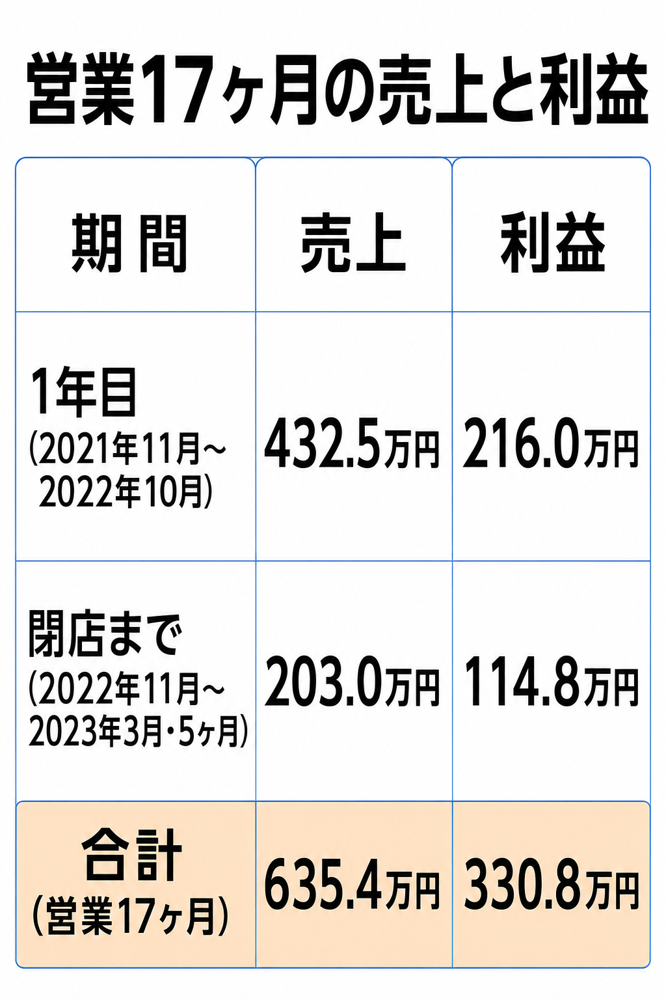
いちばんいい月は、2022年7月。
売上67.1万円、利益48.1万円でした。
立ち上がりは、こうでした。
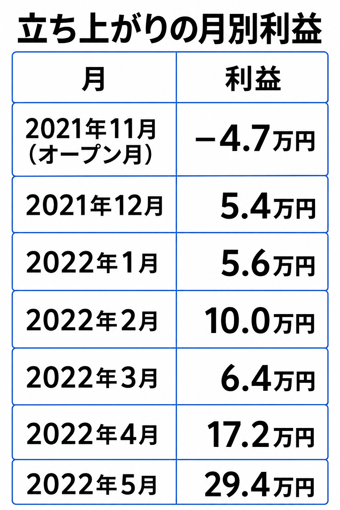
最初の半年は、月の利益が平均6.7万円。
法人の定期利用が始まった4月から、一気に伸びました。
7ヶ月目からは、月の平均が26.4万円です。
ただ、波もありました。
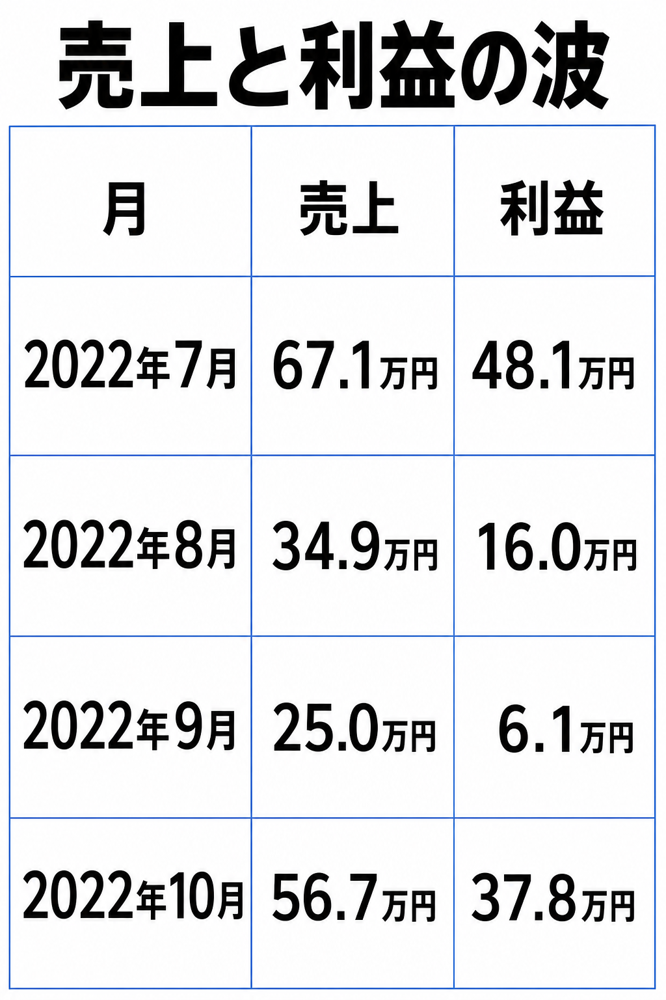
8月と9月は、法人の利用がありませんでした。
それだけで、売上が半分近くまで落ちました。
大口のお客さんがいると、その人が休むと店ごと休みになります。
初期費用は9ヶ月で回収
初期費用155.5万円に対して、利益の累計はこう増えました。
- 2022年6月(8ヶ月目): 108.0万円
- 2022年7月(9ヶ月目): 156.1万円
9ヶ月目で、元が取れました。
戻ってきた敷金を引いた実質80.5万円で見れば、8ヶ月目です。
最終的な損益は、こうなりました。
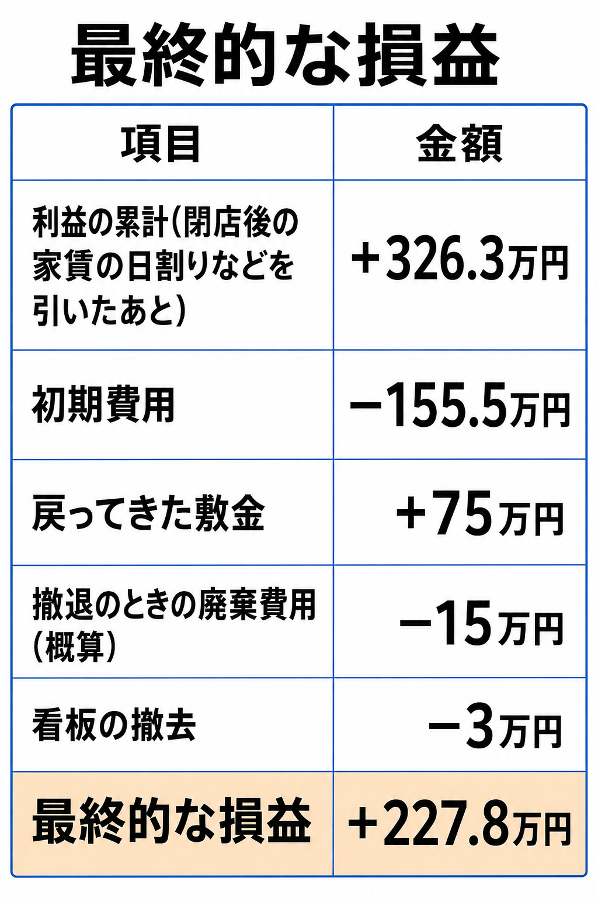
店としては、しっかりプラスで終わっています。
撤退の経緯
下の階に入っていたのは、楽器演奏の教室でした。
防音ルームも完備されていました。
内見のときに、音や振動を出して確認もしました。
先方も確認をして「大丈夫だろう」ということでした。
でも、ダンスは音楽だけではありません。
跳ぶ。着地する。
その振動が、床から下に伝わります。
2022年の12月ごろから、クレームが入るようになりました。
下の階の方と、2ヶ月ほどやり取りしました。
でも、話しているうちに、ぼくらを見る目が変わっていると分かりました。
仮に防音工事をしても、たぶんクレームは止まらない。
そう判断して、2023年3月で閉めました。
退去で、大きな出費はありませんでした。
内装工事をしていなかったので、戻す工事もいりません。
鏡はつっぱり式なので、外すだけ。
かかったのは、備品の廃棄と看板の撤去で20万円ほどです。
敷金の75万円は、全額戻ってきました。
くわしい経緯は、こちらに書いています。

撤退で失ったもの
閉める前の1年は、月25.7万円の利益が出ていました。
1年にすると、約308万円。
これが、毎年入ってくるはずでした。
しかも、法人からは次の年の利用の話も来ていて、見積もりを出していました。
次の年のぶんで、264.9万円(税込)です。
数字だけ見れば、いちばん続けたかった店です。
じゃあ、ターミナル駅がいいの?
ここまで読むと、こう思うかもしれません。
「大きな駅の近くのほうが、稼げるんじゃないか」
ぼくは、そうは考えていません。
3号店の売上の4割は、法人1社の定期利用でした。
9号店の売上の3割も、定期利用です。
2つの店に共通しているのは、駅の大きさではなく「定期で使ってくれるお客さんが近くにいたこと」です。
住宅街なら、近くに住んでいる個人のお客さんが、毎週来てくれます。
大きな駅の近くなら、近くの法人が、まとめて借りてくれることがあります。
ただし、大きな駅の近くは家賃が高くなりがちです。
3号店も、11店舗の平均より5万円ほど高い家賃でした。
法人1社が抜けると、売上が半分近くまで落ちたのも見てきたとおりです。
同じ定期利用でも、何人もの個人に支えられている店のほうが、1社が抜けても止まりません。
うまくいった理由の仮説
1. 近くに、まとまった時間を借りてくれる法人がいた
平日の日中は、個人のお客さんが少なくなりがちな時間です。
そこを、法人の定期利用が埋めてくれました。
2. 工事をしなかった
鏡はつっぱり式、内装工事はゼロ。
だから9ヶ月で元が取れて、撤退のときも大きな出費はありませんでした。
3. 公式サイトで予約を取れていた
売上の45%が、公式サイトからの予約でした。
ポータルの手数料がかからないぶん、利益が残りやすくなります。
うまくいかなかった理由
1. 下に部屋がある、5階だった
これがすべてです。
売上が落ちたなら、値段を直せます。
でも騒音は、開業したあとでは、ほとんど打つ手がありません。
2. 大口のお客さんに寄りすぎていた
法人の利用がなかった8月と9月は、売上が半分近くまで落ちました。
もし法人が別の場所に移っていたら、同じことが毎月起きていました。
ここから見えたこと
利益が出ていても、物件で終わることがある。
3号店は、数字だけならいちばんの店でした。
それでも、1年5ヶ月で終わりました。
いまのぼくは、ダンススタジオなら、下に部屋がない地下か1階を選びます。
工事をしない店は、やめるときも軽い。
内装工事をせず、買ってきた備品だけで始めたので、撤退でかかったのは20万円ほどでした。
敷金も全額戻っています。
始めるときに「やめるときのこと」まで考えておくと、失敗しても次に進めます。
大口のお客さんは、ありがたい。でも、それだけに頼らない。
いまは、個人の定期利用を何枠も持つようにしています。
1枠が抜けても、店が止まらないようにするためです。
これから始める人へ
もし、これからレンタルスタジオを始めるなら、3つだけ伝えたいです。
1. ダンスなら、下に部屋がない物件を選ぶ
内見で音を出しても、毎日の振動までは分かりません。
いちばん確実なのは、下にだれもいないことです。
2. 最初は、内装工事をしない形で始める
内装にお金をかけなければ、うまくいかなかったときに身軽に動けます。
ただし、鏡だけはつっぱり式をおすすめしません。
ずれるたびに直すのは、思った以上に手間です。
3. 定期利用は、何人かに分けて持つ
1社で売上の4割は、ありがたいけれど、こわい。
大口が抜けた月に、店がどうなるか。
一度、計算してみてください。
まとめ
初期費用155.5万円(実質80.5万円)、9ヶ月で回収。
1年5ヶ月で、最終的にプラス227.8万円。
それでも、続けられませんでした。
あなたが気になっている物件の下には、何が入っていますか?
内見のときに、下の階まで見にいってみてください。
▼もう1つの副業、AI社員だけのeBay輸出店の実録🐹

▼ブログ(レンスペ×eBay、全記事まとめ)

レンタルスペースの数字とやり方は、教科書にぜんぶ書いています。
レンタルスペース経営の教科書

販売価格は3部売れるごとに2,000円ずつ値上がりします（上限あり）。内容・最新価格は販売ページをご確認ください。